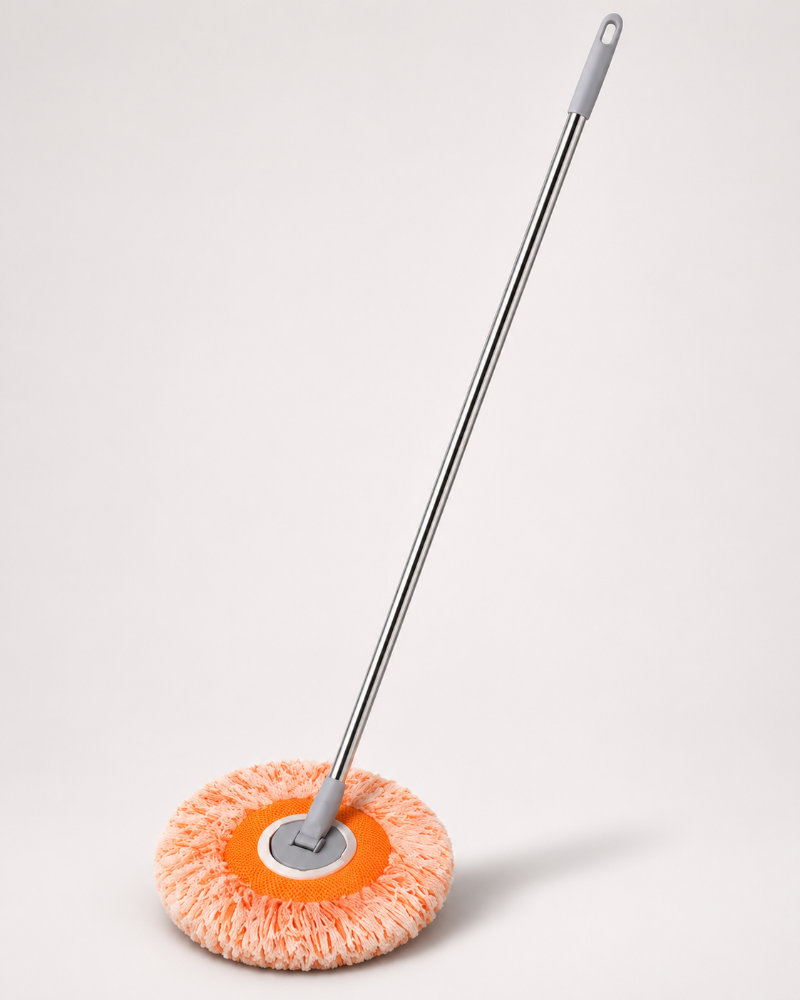

Mop Multifuncțional cu Cap Rotund din Microfibră
Mop multifuncțional cu cap rotund din microfibră și mâner metalic lung, conceput pentru curățarea pardoselilor și a suprafețelor compatibile.
Imaginile prezintă varianta cu microfibră portocalie. Confirmați disponibilitatea culorilor Negru și Bej înainte de comandă.
Stoc declarat: 500 buc. Preț B2B orientativ: 9,00 Lei fără TVA (10,89 Lei cu TVA 21%). Confirmă disponibilitatea și condițiile comerciale înainte de comandă.
DETALII PRODUS
Descriere
Mopul multifuncțional cu cap de curățare rotund și mâner metalic lung este un accesoriu destinat întreținerii suprafețelor din locuință, fiind conceput pentru utilizare în activitățile obișnuite de curățenie. Designul său permite curățarea pardoselilor și accesul la suprafețe aflate la înălțime, oferind o soluție practică pentru diferite zone ale gospodăriei.
Capul de curățare are o formă circulară și este prevăzut cu fibre textile dese dispuse în jurul unei zone centrale de fixare. Această structură permite contactul cu suprafața curățată și colectarea prafului și a impurităților, în funcție de modul de utilizare. Materialul textil este conceput pentru a facilita ștergerea suprafețelor compatibile, inclusiv a pardoselilor din gresie și a altor materiale rezistente la curățarea umedă.
Mânerul lung, realizat din metal cu finisaj argintiu permite manevrarea mopului fără a necesita aplecarea excesivă în timpul curățării podelelor. De asemenea, lungimea acestuia facilitează accesul către zone mai greu de atins, precum colțurile încăperilor, pereții și tavanele.
Sistemul de prindere dintre mâner și capul de curățare include o articulație mobilă concepută pentru adaptarea poziției mopului în funcție de unghiul de lucru. Această configurație permite orientarea capului către diferite suprafețe, oferind flexibilitate în timpul utilizării.
Combinația dintre fibrele textile portocalii, elementele de fixare gri și mânerul metalic oferă produsului un aspect distinct și funcțional. Mânerul este prevăzut la capăt cu un orificiu pentru agățare, facilitând depozitarea verticală atunci când mopul nu este utilizat.
Pentru distribuitorii B2B, magazinele de articole pentru casă, comercianții en-gros și platformele marketplace, mopul multifuncțional reprezintă o opțiune pentru completarea portofoliilor dedicate produselor de curățenie și întreținere a locuinței. Designul versatil și posibilitatea utilizării pe diferite suprafețe îl recomandă pentru comercializarea în categoria accesoriilor pentru gospodărie.
Comandă și informații
Site-ul funcționează ca un catalog B2B. Nu există plată online sau coș de cumpărături. Stoc declarat: 500 buc. Confirmă disponibilitatea înainte de comandă.
Discută pe WhatsApp →DIN ACEEAȘI CATEGORIE